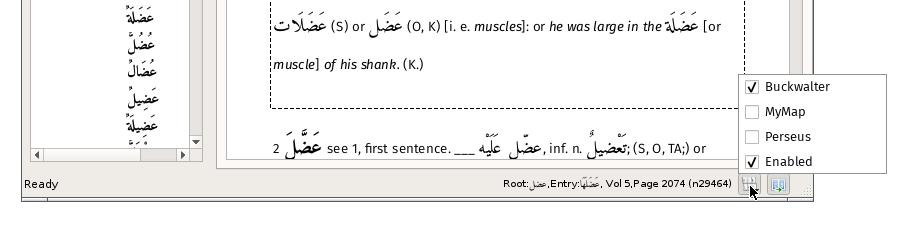

Keymaps are provided as means of entering Arabic text without an Arabic keyboard.
There are three steps
- Setup a text file mapping of Latin characters to Arabic character.
- Run a perl script to convert the text file into a format usable by the software
- Make the mapping available
Setting up a map
The essential part of a keymap contains a sequence of lines each of which has the names of two characters as they appear in the Unicode specification. (See here.)
For example,
LATIN SMALL LETTER R;ARABIC LETTER REH
The character to the left of the semi-colon is what will be typed on the keyboard; the character to the right will appear in the dialog using the keymap i.e. the search dialogs.
The full Buckwalter keymap is here.
The Buckwalter map file (buckwalter.txt) is distributed with the software. I would recommend editing this instead of starting from scratch.
Processing the map
Once all the mappings have been setups a script (jsdata.pl) is run to convert the map.
perl jdata.pl <options>
Where options are:
--map <map file name> Full path to the map file. Required.
--out <output file name> Name of the ouput file. If not supplied the input file name is used with the suffix
replaced by 'js' (if present) or with '.js' appended (if not present)
--outdir <output directory> Where the output file is created. Optional.
If not supplied the systems tmp directory is used
--unicode <file name> The full path to UnicodeData.txt. If not supplied assumes ../data/UnicodeData.txt
--overwrite Overwrite an existing output file
For example,
perl jsdata.pl --map buckwalter.txt --out buckwalter-1.7.js --unicode UnicodeData.txt
Here, "buckwalter.txt" is the file containing the keymap.
A second script is provided that will generate an HTML page showing the mapping:
perl map2html.pl <options>
--map <map file name> - required, map file e.g buckwalter.txt
--html <output file> - optional to standard output
For example,
perl map2html.pl --map buckwalter.txt --html buckwalter.html
Making the map available
To make the map available to the software, the files need to be copied to the Map directory for the current theme. In the above example the files are "buckwalter-1.7.js" and "buckwalter.html".
The directory structure is described here
Also the configuration file for the current theme needs to be aware of the new mapping. A third script is provided to do this:
perl addmap.pl <options>
--name <map name> - required,
--mapfile <map file name> - required, map file e.g buckwalter-16.js
--html <html file name> - optional html file name
--config <file name> - required, the full path to the settings.ini file
--out <file name> - optional, if not entered the original config file will be overwritten
--overwrite - if the map name is already in use overwrite otherwise cancel
For example,
perl addmap.pl --name MyKeyMap --mapfile buckwalter-1.7.js --html buckwalter.html
(The script simply insert two lines into the [Maps] section of settings.ini.)
Once this process is done, the next time the application is run, the map will be available:
